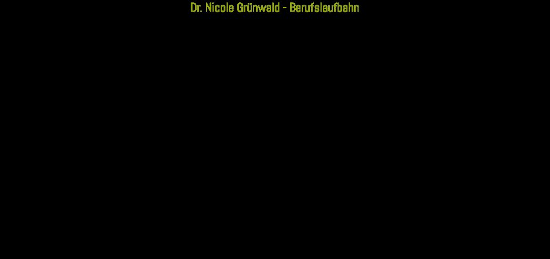

Dr. Nicole Grünwald
Inhaberin
Fachtierärztin für Zahnheilkunde und Kieferchirurgie bei Klein- und Heimtieren, Diplom der Österreichischen Tierärztekammer, Dezember 2020.
Team
Vier Tierärztinnen und Tierärzte, tierärztliche Assistenz und zwei Konsiliartierärzte – gemeinsam betreuen wir Kleintiere und Heimtiere in Alland.

Inhaberin
Fachtierärztin für Zahnheilkunde und Kieferchirurgie bei Klein- und Heimtieren, Inhaberin der Tierarztpraxis Alland.
Nachdem sie bereits als Kind ihre Liebe zu Tieren entdeckt hatte, konnte sie nach vielen Jahren der Ausbildung ihr Studium der Veterinärmedizin in Wien abschließen. Seit Mai 1999 führt sie die Praxis in Alland und hat sich auf ihr Steckenpferd spezialisiert: die tierärztliche Zahnmedizin.
Abschluss des Studiums der Veterinärmedizin in Wien.
Ein halbes Jahr in den Vereinigten Staaten: postgraduate Studium an der University of Tennessee mit klinischem Schwerpunkt in Innerer Medizin, Neurologie und Chirurgie für Kleintiere sowie Innerer Medizin und Orthopädie für Pferde.
Dissertation über Eibenvergiftungen beim Pferd. Währenddessen praktizierte sie bei verschiedenen Tierärzten in der Landwirtschaft sowie in der Pferde- und Kleintiermedizin, um den Bezug zur Praxis nicht zu verlieren.
Führung der eigenen Praxis in Alland, zunächst im Gemeindeamt.
Prüfung zum Diplom der Österreichischen Tierärztekammer für Zahn- und Kieferchirurgie für Klein- und Heimtiere.
Fortbildungen in Zahnheilkunde für Kleintiere ebenso wie in Innerer Medizin, Orthopädie, Dermatologie, Geriatrie und den Krankheiten kleiner Heimtiere.
Ordinationsteam
Inhaberin
Fachtierärztin für Zahnheilkunde und Kieferchirurgie bei Klein- und Heimtieren, Diplom der Österreichischen Tierärztekammer, Dezember 2020.
Tierärztin, seit 2023
Verstärkt das Team der Tierarztpraxis Alland seit 2023.
Tierärztin
Teil des Ordinationsteams in Alland.
Tierarzt
Teil des Ordinationsteams in Alland.
Assistenz
Tierärztliche Assistenz in Ordination und Operationsbetrieb.
Konsiliartierarzt
Wird bei speziellen Fragestellungen zur Beurteilung hinzugezogen.
Konsiliartierarzt
Wird bei speziellen Fragestellungen zur Beurteilung hinzugezogen.
Während jeder Narkose ist permanent eine speziell in Anästhesie geschulte Tierärztin für die Überwachung aller Vitalfunktionen zuständig. Bei besonders kritischen Patienten ziehen wir auf Wunsch einen spezialisierten Tieranästhesisten zu.
Ablauf einer Zahnoperation →Philosophie
Das Wohl Ihres Tieres liegt mir sehr am Herzen. Darum bin ich stets bemüht, Sie über alle vorhandenen Möglichkeiten und auch über die Prognosen eingehend aufzuklären. Dies kann manchmal etwas mehr Zeit erfordern. Denn nur ein gut informierter Besitzer kann für sein Tier die richtige Entscheidung treffen.
So soll Ihrem Tier durch die Zusammenarbeit mit Ihrem Tierarzt ein möglichst artgerechtes Leben und Ihnen damit viel Freude mit Ihrem Haustier ermöglicht werden.
Dr. Nicole Grünwald